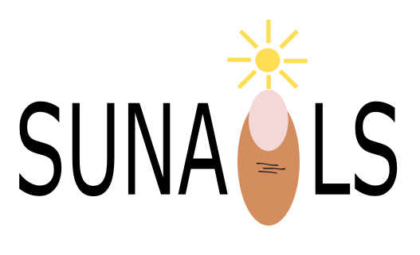
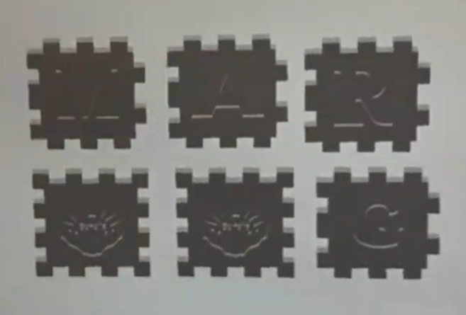

Pirmā semestra beigās mēs sākām mācīties par tekstapstrādi aplikācijā Word. Vienu no maniem darbiem Word jūs varat lejupielādēt šeit.
Mācoties attēlu apstrādi, mums bija jātaisa gif animācija par izdalīto tēmu. Manā gadījumā man bija jātaisa gif, kas brīdina un ierosina aizsardzību pret izsekošanu.
Šis ir mans uztaisītais gif:
Viena no pirmajām tēmām šogad bija vektorgrafika logo taisīšana izvēlētajai kompānijai. Mūsu grupa izvēlējās taisīt logo kompānijai Sunails.
Šis ir mans logo:

Šis ir mūsu grupas uztaisītais 3d kuba makets:

Mana mīļāka tēma šogad bija video taisīšana par 3d kuba izveidi, kura procesa izdevās izmantot arī 3d printeri.
Manuprāt, man ļoti veiksmīgi izdevās uztaisīt video, bet to vari vērtēt arī tu šeit:
Otrā semestra sākumā mēs mācījāmies par izklājlapām, un kā tās palīdz datu apkopopošanā un matemātiskos aprēķinos aplikācijā Excell.
Šeit var lejupielādēt un apskatīt vienu no manām izrēķinātajām izklājlapām: